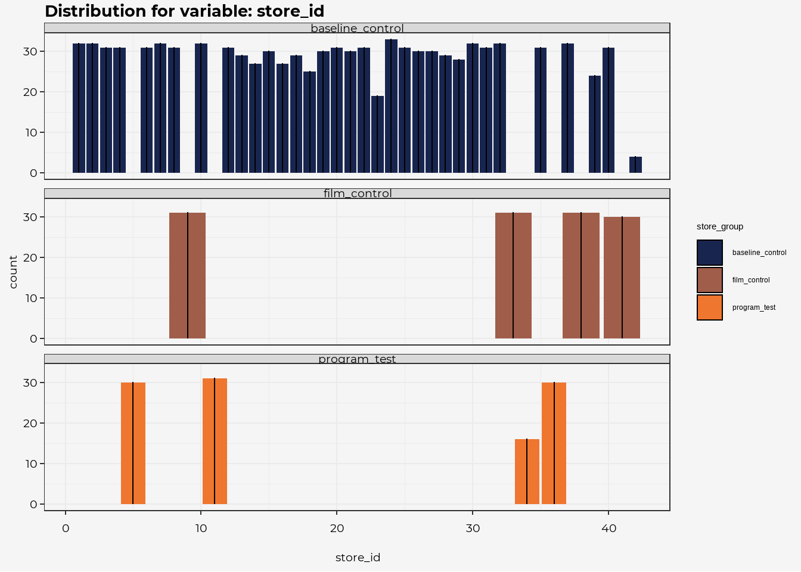
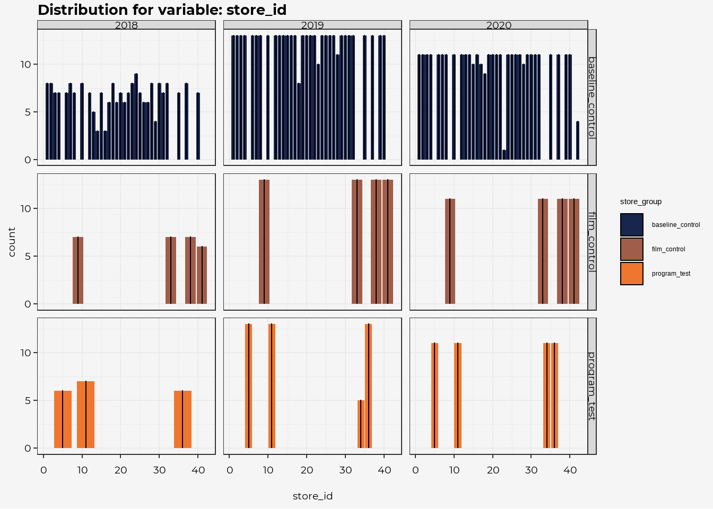

Methodology
Last Updated: 30 January, 2021
This is how the analysis was performed…
- ingesting the dataset
- exploring the results
- developing the cleaned views
Code will be visible here (probably show/hide code chunks)
Read In Data
dat <- read_csv(here::here("data-raw", "looma_audition_data.csv"))
colnames <- colnames(dat)Data Notes
The csv file provided contains sample data for analysis. We receive raw data at the transaction level, with one row per customer and item purchased, with timestamps. The sample data is an aggregate of this at the “promotional period” level. Each campaign runs for one promotional period at a time. These periods vary between 3 and 5 weeks in length, so we provide sales in this data as “weekly velocity”, meaning average sales per week during each period.
Specifically, the dataset contains these columns:
- store_group : which of the three experimental conditions the store falls in
- store_id : ID unique to a physical store
- promo_period_int : unique promo period number ordered in time (this doesn’t provide information you can’t get from period_num and period_year, but it’s convenient)
- period_num : number of the promo period (there are 13 every year)
- period_year: year the period falls in (along with period_num, unique identifies the promo period)
- weekly_velocity_amount : average weekly dollar sales
- weekly_velocity_quantity : average weekly unit sales
The data provided is all for one featured product from Brewery A. The experiment was run during period number 11 of 2020. Data is provided back to mid-2018, but don’t feel compelled to incorporate it all in your analysis. What data is most relevant is up to you.
Summary of Data
glimpse(dat)## Rows: 1,219
## Columns: 7
## $ store_group <chr> "baseline_control", "baseline_control", "b...
## $ store_id <dbl> 1, 2, 3, 3, 4, 5, 1, 4, 6, 3, 7, 4, 4, 8, ...
## $ promo_period_int <dbl> 46, 46, 50, 62, 63, 64, 65, 66, 68, 68, 69...
## $ period_num <dbl> 7, 7, 11, 10, 11, 12, 13, 1, 3, 3, 4, 5, 7...
## $ period_year <dbl> 2018, 2018, 2018, 2019, 2019, 2019, 2019, ...
## $ weekly_velocity_amount <dbl> 98.68, 120.43, 114.68, 181.65, 112.44, 89....
## $ weekly_velocity_quantity <dbl> 6.75, 7.25, 6.75, 10.25, 6.25, 6.00, 6.75,...Check for missingness
naniar::vis_miss(dat)
First Pass Review
Distributions of Data
reviewCol <-
purrr::map(colnames,
~ dat %>% ggplot(aes_string(.x, fill="store_group"))+
geom_bar()+
scale_fill_pdw()+
labs(title = glue::glue("Distribution for variable: {.x}"))+
theme(plot.title = element_text(size = 15))
)
# reviewCol[[2]] #this is "iter 1"
reviewCol## [[1]]
##
## [[2]]
##
## [[3]]
##
## [[4]]##
## [[5]]##
## [[6]]
##
## [[7]]Correlations
summary <- dat %>%
group_by(store_group) %>%
summarise(avg_amnt = mean(weekly_velocity_amount),
n = n(),
std_amnt = sd(weekly_velocity_amount))
dat %>%
ggplot(aes(store_group, weekly_velocity_amount, fill = store_group, color = store_group))+
geom_jitter(size = 0.5, width = .3)+
geom_violin(alpha=0.7)+
geom_point(data = summary, aes(store_group, avg_amnt), color= "black", size = 2.5)
summary %>%
gt() %>%
fmt_number(columns = c(2,4), decimals = 2)| store_group | avg_amnt | n | std_amnt |
|---|---|---|---|
| baseline_control | 49.59 | 989 | 39.04 |
| film_control | 45.96 | 123 | 21.98 |
| program_test | 64.55 | 107 | 35.75 |
Investigatings Effect
Is there an overall improvement?
Is there a potential store dependency?
Can we know if that’s the case?
Phil Walker
Data Scientist
Greensboro, NC